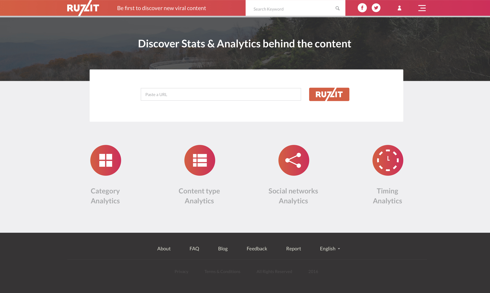
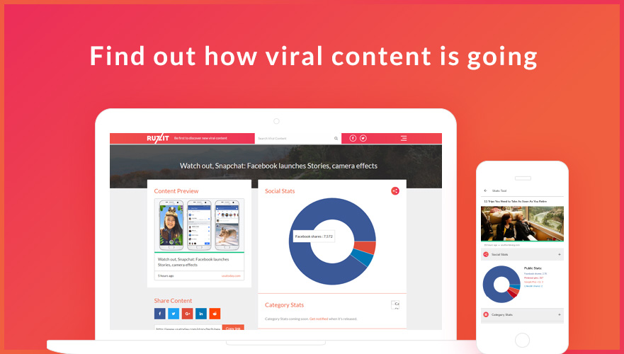
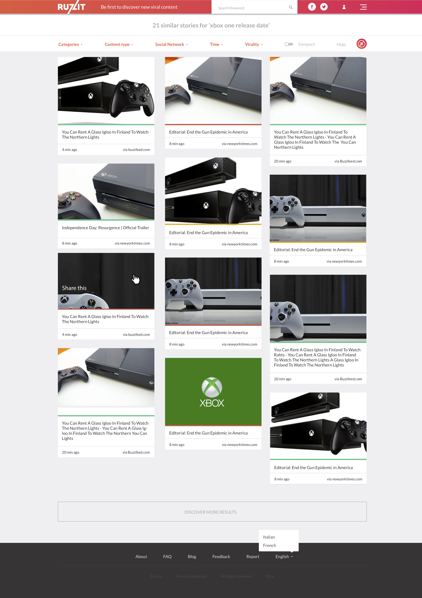

- Year: {{project?.year}}
- Role: {{project?.role}}
- Type: {{project?.type}}
Case Study
{{project?.title}}
The Challenge
Providing a central place for everyone to discover, and share viral content. Provide this data in a aggregated feed, than can be filtered and customized for each unique user.
Our vision is to become the internet's best viral content feed. Eventually, we aim to track over 100,000+ sources (blogs, social pages, videos etc) and have hundreds of categories.
Our Approach
After looking around for a product to find and aggregate viral social media and not finding one. We decided to create Ruzzit, this was a project between Knappdevelopment, two developers, and one Designer. We used a variety of Technology to scrape social media websites, find trending content, and then serve it to the user.
Ruzzit was built on React, this allowed us to manage one code base for both mobile, and phone applications.



Outcome
After building up our product and launching we were featured on Producthunt, Betapage, Youtube reviews, and spiegel.de